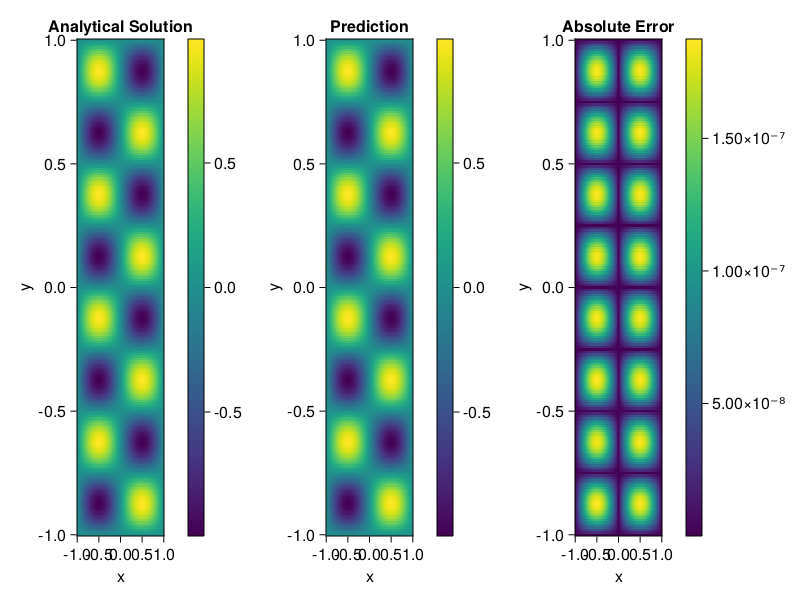

Helmholtz equation
Let us consider the Helmholtz equation in two space dimensions
\[\begin{aligned} &\Delta u(x, y)+k^{2} u(x, y)=q(x, y), \quad(x, y) \in \Omega:=(-1,1)^2 \\ &u(x, y)=0, \quad(x, y) \in \partial \Omega \end{aligned}\]
where
\[q(x, y)=-\left(a_{1} \pi\right)^{2} \sin \left(a_{1} \pi x\right) \sin \left(a_{2} \pi y\right)-\left(a_{2} \pi\right)^{2} \sin \left(a_{1} \pi x\right) \sin \left(a_{2} \pi y\right)+k^{2} \sin \left(a_{1} \pi x\right) \sin \left(a_{2} \pi y\right).\]
The excat solution is $u(x,y)=\sin{a_1\pi x}\sin{a_2\pi y}$. We chose $k=1, a_1 = 1$ and $a_2 = 4$.
using ModelingToolkit, IntervalSets, Sophon, Lux
using Optimization, OptimizationOptimJL
@parameters x,y
@variables u(..)
Dxx = Differential(x)^2
Dyy = Differential(y)^2
a1 = 1
a2 = 4
k = 1
q(x,y) = -(a1*π)^2 * sin(a1*π*x) * sin(a2*π*y) - (a2*π)^2 * sin(a1*π*x) * sin(a2*π*y) + k^2 * sin(a1*π*x) * sin(a2*π*y)
eq = Dxx(u(x,y)) + Dyy(u(x,y)) + k^2 * u(x,y) ~ q(x,y)
domains = [x ∈ Interval(-1,1), y ∈ Interval(-1,1)]
bcs = [u(-1,y) ~ 0, u(1,y) ~ 0, u(x, -1) ~ 0, u(x, 1) ~ 0]
@named helmholtz = PDESystem(eq, bcs, domains, [x,y], [u(x,y)])\[ \begin{align} \frac{\mathrm{d}}{\mathrm{d}y} \frac{\mathrm{d}}{\mathrm{d}y} u\left( x, y \right) + \frac{\mathrm{d}}{\mathrm{d}x} \frac{\mathrm{d}}{\mathrm{d}x} u\left( x, y \right) + u\left( x, y \right) =& - 166.78 \sin\left( 3.1416 x \right) \sin\left( 12.566 y \right) \end{align} \]
Note that the boundary conditions are compatible with periocity, which allows us to apply BACON.
chain = BACON(2, 1, 5, 2; hidden_dims = 32, num_layers=5)
pinn = PINN(chain) # call `gpu` on it if you want to use gpu
sampler = QuasiRandomSampler(300, 100)
strategy = NonAdaptiveTraining()
prob = Sophon.discretize(helmholtz, pinn, sampler, strategy)
@time res = Optimization.solve(prob, BFGS(); maxiters=1000)u: ComponentVector{Float64}(filters = (filter_1 = (bias = [0.4756451059629575; 0.6073445192495078; … ; 0.37117023640043884; 0.7221605958823043;;]), filter_2 = (bias = [-0.6733395719889668; 0.16891286062969857; … ; 0.2097826968734536; 0.479129011376669;;]), filter_3 = (bias = [-0.8202205828791728; -0.4369352308049623; … ; -0.4476464525695489; -0.43870935581662246;;]), filter_4 = (bias = [-0.9339300924608624; -0.09575427114883124; … ; 0.6723445230208632; -0.02977001057054708;;]), filter_5 = (bias = [-0.6280260611267815; -0.9408020098241284; … ; -0.7254986753652642; 0.2472424848866791;;])), linear_layers = (layer_1 = (weight = [0.3316241138562979 -0.13044178225546896 … -0.4618768533939905 0.16205534451397685; -0.23987345005742056 0.38186304406144767 … -0.22411745994392113 0.23346647464355766; … ; -0.06271324008809388 0.569045156971247 … -0.17519329461388425 -0.3699688800238208; -0.15420472845843478 0.23209069740032784 … 0.3255303872420245 0.3365858674101595], bias = [0.04969177967058838; -0.0049237429316199765; … ; -0.10515378353853752; 0.02992651925944689;;]), layer_2 = (weight = [0.0016612286785145402 0.3772742109320033 … -0.4741031036939751 0.0006568256341058449; -0.44357852883385646 -0.14566854065428766 … 0.3278487325005065 -0.245778462046891; … ; 0.11939531138976242 0.36173310950202664 … -0.22155484250054916 -0.19625667515055922; 0.23283121713519214 -0.16617373314135514 … 0.05850532166936848 -0.09352356722769012], bias = [-0.001579079830108397; -0.03406237479343387; … ; 0.03133182238680923; 0.04408214622299121;;]), layer_3 = (weight = [0.2721261743840885 -0.060319235700257004 … 0.2918336206597762 -0.21971913471654414; 0.058873252639395114 0.36891740909879245 … 0.23049969050274602 0.025905286593965016; … ; 0.2500563876688687 -0.1997785637828768 … -0.17545955305652913 0.061907802148273135; 0.11498958890893769 0.06744494014653138 … -0.11070716964540808 0.2810964902940311], bias = [-0.0009464628041345059; 0.0016521896453116156; … ; -0.0010833935974567913; 0.004181954989476755;;]), layer_4 = (weight = [0.15691197457694658 0.012873472534422668 … 0.16965156249479915 0.2479018269451104; 0.337209173781271 -0.20890336554312572 … -0.14750156171525378 0.25587508279530796; … ; -0.13528634163476158 -0.38847910993793855 … 0.008310314180204358 0.29069716411847407; 0.0818930953303184 -0.3934001709418416 … 0.06933511948596863 0.3496507569816362], bias = [-0.008458855210498792; 0.03538405432132625; … ; 0.015426255666413828; -0.003432584504432433;;])), output_layer = (weight = [-0.10616650279612425 0.18152771886422212 … 0.1860070719986008 -0.18679344578503232], bias = [0.0010517742984381892;;]))Let's plot the result.
phi = pinn.phi
xs, ys= [infimum(d.domain):0.01:supremum(d.domain) for d in domains]
u_analytic(x,y) = sinpi(a1*x)*sinpi(a2*y)
u_real = [u_analytic(x,y) for x in xs, y in ys]
phi_cpu = cpu(phi) # in case you are using GPU
ps_cpu = cpu(res.u)
u_pred = [sum(phi_cpu(([x,y]), ps_cpu)) for x in xs, y in ys]
using CairoMakie
axis = (xlabel="x", ylabel="y", title="Analytical Solution")
fig, ax1, hm1 = heatmap(xs, ys, u_real, axis=axis)
Colorbar(fig[:, end+1], hm1)
ax2, hm2= heatmap(fig[1, end+1], xs, ys, u_pred, axis= merge(axis, (;title = "Prediction")))
Colorbar(fig[:, end+1], hm2)
ax3, hm3 = heatmap(fig[1, end+1], xs, ys, abs.(u_pred-u_real), axis= merge(axis, (;title = "Absolute Error")))
Colorbar(fig[:, end+1], hm3)
fig